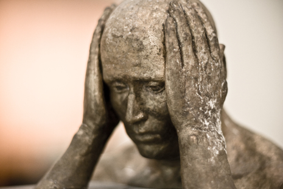

Mindset & Wellness
How To Exercise In A World Of Hurt

Sometimes I question my decisions because of the way they make me feel at certain moments. Like right now as I type this. I'll be honest, I'm not in the mood to exercise today.
I don't go out and have drinks very often, but I spent the day having a few beers while floating down a river two days ago at the springs here in the sunshine state of Florida. Some of the clearest and most refreshing water I've ever had the privilege to swim in. 'Twas amazing. Then, after a brief intermission of only a couple hours my friends and I proceeded to go out to the bars and I had a few more drinks. I spent the entire day listening to my body telling me it hates me for it yesterday, and then I did it again last night at another event because this is the last weekend I'll have with my Floridian friends before I move to Hawaii. Now here I lay on my apartment floor taking in the pain of my foolish decision to have drinks two nights in a row. Needless to say I went a little over my limit.
My head hurts, I have a stomach ache, I don't want to socialize, it's hard to focus, I'm wrecked right now. I also ate some pizza and taco bell over the weekend. I feel like a blob, and I'm probably about five pounds lighter than I normally weigh because of the dehydration I'm feeling at the moment. I'm fully aware that this feeling is going to last a while, but thankfully water is on tap here in the United States.
As I look back on this experience I wonder how on Earth I am going to make it to the gym today while I'm feeling like this. Let alone, put my body into movement. However, I've done this before. You can call me a professional. My high school years and the first two years of college were filled with weekends like this. I know, reckless right? My goal here is to get rid of the toxins that were ingested and get over the damage that's been done. People say time is the heal-all, but I'd like to come to terms with my body now.
I don't care if I'm hungover. It's been two days since I got some exercise, and that is exactly what I plan on doing today. Not because I want to. I just know it's what my body needs, and if I'm going to live fruitfully tomorrow then this is going to have to happen. My body will be happy after I'm done with my chest/cardio exercises and do my pool routine where I go from the steam room to the cold plunge (55 degree cold pool) to the jacuzzi.
I made this rule up for myself where missing exercise for more than two days in a row is not acceptable. Making this rule for myself has kept me focused on my exercise for years. You might be one of those people that has a set schedule for working out, but not me. As a trainer, I have no exercise schedule. I just exercise. I make up my workouts as I go, making sure I hit all the high points of each movement for each muscle group while I listen to how my body reacts. Once my heart and my muscles feel like they've been sufficiently worked, that'll be sign of a workout well done.
The main thing is to decide. If you're someone like me, when my body tells me it's upset with me like it is right now I just move to feel better. I'm a firm believer that movement creates positive energy, and you and I both know exercise is a good thing on a bad day. I've already made my decision. I'll be going to the gym shortly. If you're having a bad day, go through the movements and see how it feels. You'll thank me later.